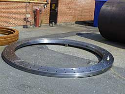
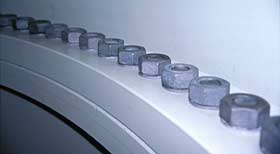

Installing
and Assembling Wind Turbine Towers
Towers are usually bolted onto the concrete foundations on which they are placed.
All
pictures
© 1999 Soren Krohn

Flanges
 Wind
turbine tower sections are bolted together using hot rolled steel
flanges, which are welded to the end of each tower section.
Wind
turbine tower sections are bolted together using hot rolled steel
flanges, which are welded to the end of each tower section.
 The flanges are made from killed steel. The
image shows a pair of flanges.
The flanges are made from killed steel. The
image shows a pair of flanges.
Bolt
Assembly
 The
next image shows how the tower sections are bolted together inside
the tower.
The
next image shows how the tower sections are bolted together inside
the tower.
 The quality of the flanges and the bolt tensions
are important parameters for the safety of wind turbine towers.
The quality of the flanges and the bolt tensions
are important parameters for the safety of wind turbine towers.

|
Back | Home
| Forward |
© Copyright 2000 Soren Krohn
Updated 9 September 2000
http://www.windpower.org/tour/manu/towrassy.htm